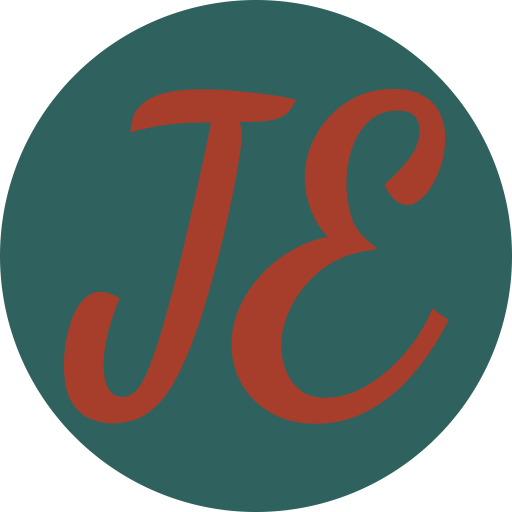

Opa e aí, tudo bem?
Eu sou o João,
Eu sou um
Ofereço soluções completas em desenvolvimento, criando sites, jogos e aplicativos que atendem às necessidades específicas dos meus clientes. Utilizo tecnologias modernas como ReactJS, HTML, CSS, SASS e JavaScript para garantir a criação de sites dinâmicos e responsivos, com foco na experiência do usuário. Para jogos, me especializo em ferramentas como Godot e Unity, proporcionando experiências imersivas e de alta performance. Para aplicativos, utilizo React Native e Flet, criando soluções intuitivas e eficientes para plataformas móveis. Com a minha expertise em full-stack, sou capaz de entregar projetos completos e escaláveis, sempre alinhados às tendências mais recentes do mercado.